산업안전기사 (2012-05-20 기출문제)
1과목: 안전관리론
1. 다음 중 무재해 운동을 추진하기 위한 조직의 3기둥으로 볼 수 없는 것은?
- 최고경영층의 엄격한 안전방침 및 자세
- 직장 자주활동의 활성화
- 전 종업원의 안전요원화
- 라인화의 철저
(정답률: 70%)

2. 다음 중 한번 학습한 결과가 다른 학습이나 반응에 영향을 주는 것으로 특히 학습효과를 설명할 때 많이 쓰이는 용어는?
- 학습의 연습
- 학습곡선
- 학습의 전이
- 망각곡선
(정답률: 82%)
3. 자율검사프로그램을 인정받기 위해 보유하여야 할 검사 장비의 이력카드 작성, 교정주기와 방법 설정 및 관리 등의 관리주체는 누구인가?
- 사업주
- 제조자
- 안전관리대행기관
- 안전보건관리책임자
(정답률: 80%)
4. 다음 중 OJT(On the Job Training)의 특징에 대한 설명으로 옳은 것은?
- 직장의 실정에 맞는 구체적이고 실제적인 지도 교육이 가능하다.
- 타 직장의 근로자와 지식이나 경험을 교류할 수 있다.
- 외부의 전문가를 위촉하여 전문교육을 실시할 수 있다.
- 다수의 근로자에게 조직적 훈련이 가능하다.
(정답률: 86%)
5. 산업안전보건법상 안전보건총괄책임자의 직무에 해당되는 것은?
- 업무수행 내용의 기록 ㆍ 유지
- 근로자를 보호하기 위한 의료행위
- 작업성 질환 발생의 원인 조사 및 대책 수립
- 안전인증대상 기계 ㆍ 기구등과 자율안전확인대상 기계ㆍ기구 등의 사용 여부 확인
(정답률: 55%)
6. 다음 중 하인리히의 재해구성비율 “1 : 29 : 300”에서 “29”에 해당되는 사고발생비율로 옳은 것은?
- 8.8%
- 9.8%
- 10.8%
- 11.8%
(정답률: 77%)
7. 리더십 이론 중 관리 그리드 이론에 있어 대표적인 유형의 설명이 잘못 연결된 것은?
- (1.1) : 무관심형
- (3.3) : 타협형
- (9.1) : 과업형
- (1.9) : 인기형
(정답률: 78%)
8. 다음 중 상황성 누발자의 재해 유발원인과 가장 거리가 먼 것은?
- 작업이 어렵기 때문에
- 기계설비의 결함이 있기 때문에
- 심신에 근심이 있기 때문에
- 도덕성이 결여되어 있기 때문에
(정답률: 72%)
9. 다음 중 강의법에 대한 설명으로 틀린 것은?
- 많은 내용을 체계적으로 전달할 수 있다.
- 다수를 대상으로 동시에 교육할 수 있다.
- 전체적인 전망을 제시하는데 유리하다.
- 수강자 개개인의 학습진도를 조절할 수 있다.
(정답률: 86%)
10. 무재해운동의 추진기법에 있어 위험예지훈련 제4단계(4라운드) 중 제2단계에 해당하는 것은?
- 본질추구
- 현상파악
- 목표설정
- 대책수립
(정답률: 77%)
11. 다음 중 스탭형 안전조직에 있어 스탭의 주된 역할이 아닌 것은?
- 안전관리 계획안의 작성
- 정보수집과 주지, 활용
- 실시계획의 추진
- 기업의 제도적 기본방침 시달
(정답률: 72%)
12. 단조로운 업무가 장시간 지속될 때 작업자의 감각기능 및 판단능력이 둔화 또는 마비되는 현상을 무엇이라 하는가?
- 의식의 과잉
- 망각현상
- 감각차단현상
- 피로현상
(정답률: 53%)
13. 상해 정도별 분류에서 의사의 진단으로 일정기간 정규 노동에 종사할 수 없는 상해에 해당하는 것은?
- 영구 일부노동 불능상해
- 일시 전노동 불능상해
- 영구 전노동 불능상해
- 응급 조치상해
(정답률: 82%)
14. 산업안전보건법상 사업내 산업안전 ㆍ 보건 관련 교육과 정별 교육시간이 잘못 연결된 것은?
- 일용근로자의 채용 시의 교육 : 2시간 이상
- 일용근로자의 작업내용 변경 시의 교육 : 1시간 이상
- 사무직 종사 근로자의 정기교육 : 매분기 3시간 이상
- 관리감독자의 지위에 있는 사람의 정기교육 : 연간 16시간 이상
(정답률: 57%)
15. 인간의 적응기제 중 방어기제로 볼 수 없는 것은?
- 승화
- 고립
- 합리화
- 보상
(정답률: 75%)
16. 다음 [그림]에 해당하는 산업안전보건법상 안전・보건 표지의 명칭은?
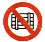
- 화물적재금지
- 사용금지
- 물체이동금지
- 화물출입금지
(정답률: 74%)
17. 다음 중 태도교육을 통한 안전태도 형성요령과 가장 거리가 먼 것은?
- 청취한다.
- 이해한다.
- 칭찬한다.
- 금전적 보상을 한다.
(정답률: 88%)
18. 재해 코스트 산정에 있어 시몬즈(R.H. Simods) 방식에 의한 재해코스트 산정법을 올바르게 나타낸 것은?
- 직접비 + 간접비
- 간접비 + 비보험코스트
- 보험코스트 + 비보험코스트
- 보험코스트 + 사업부보상금 지급액
(정답률: 86%)
19. 1일 8시간씩 연간 300일을 근무하는 사업장의 연천인율이 7 이었다면 도수율은 약 얼마인가?
- 2.41
- 2.92
- 3.42
- 4.53
(정답률: 70%)
20. 다음 중 방독마스크의 종류와 시험가스가 잘못 연결된 것은?
- 할로겐용 : 수소가스(H2)
- 암모니아용 : 암모니아가스(NH3)
- 유기화합물용 : 시클로헥산(C6H12)
- 시안화수소용 : 시안화수소가스(HCN)
(정답률: 73%)
2과목: 인간공학 및 시스템안전공학
21. 다음 중 개선의 ECRS의 원칙에 해당하지 않는 것은?
- 제거(Eliminate)
- 결합(Combine)
- 재조정(Rearrange)
- 안전(Safety)
(정답률: 66%)
22. 다음 중 시스템 신뢰도에 관한 설명으로 옳지 않은 것은?
- 시스템의 성공적 퍼포먼스를 확률로 나타낸 것이다.
- 각 부품이 동일한 신뢰도를 가질 경우 직렬 구조의 신뢰도는 병렬 구조에 비해 신뢰도가 낮다.
- 시스템의 병렬구조는 시스템의 어느 한 부품이 고장나면 시스템이 고장나는 구조이다.
- n중 k구조는 개의 부품으로 구성된 시스템에서 k개 이상의 부품이 작동하면 시스템이 정상적으로 가동되는 구조이다.
(정답률: 80%)
23. 다음 중 기계 또는 설비에 이상이나 오동작이 발생하여도 안전사고를 발생시키지 않도록 2중 또는 3중으로 통제를 가하도록 한 체계에 속하지 않는 것은?
- 다경로하중구조
- 하중경감구조
- 교대구조
- 격리구조
(정답률: 53%)
24. 다음 FT도에서 정상사상(Top event)이 발생하는 최소 컷셋의 P(T)는 약 얼마인가? (단, 원 안의 수치는 각 사상의 발생확률이다.)
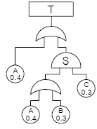
- 0.311
- 0.454
- 0.204
- 0.928
(정답률: 54%)
25. 동작경제의 원칙 중 작업장 배치에 관한 원칙에 해당하는 것은?
- 공구의 기능을 결합하여 사용하도록 한다.
- 두 팔의 동작은 동시에 서로 반대방향으로 대칭적으로 움직이도록 한다.
- 가능하다면 쉽고도 자연스러운 리듬이 작업동작에 생기도록 작업을 배치한다.
- 공구나 재료는 작업동작이 원활하게 수행되도록 그위치를 정해준다.
(정답률: 54%)
26. 다음 중 FT도에서 사용하는 논리기호에 있어 주어진 시스템의 기본사상을 나타내는 것은?
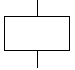
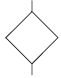
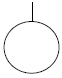
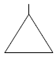
(정답률: 75%)
27. 다음 중 위험관리에 있어 위험조정기술로 가장 적절하지 않은 것은?
- 책임(responsibility)
- 위험 감축(reduction)
- 보류(retention)
- 위험 회피(avoidance)
(정답률: 49%)
28. 다음 중 NIOSH lifting guideline에서 권장무게한계(RWL)산출에 사용되는 평가 요소가 아닌 것은?
- 수평거리
- 수직거리
- 휴식시간
- 비대칭각도
(정답률: 66%)
29. 어떤 결함수를 분석하여 minimal cut set을 구한결과 다음과 같았다. 각 기본사상의 발생확률을 qi, i=1, 2, 3라 할 때 정상사상의 발생확률함수로 옳은 것은?
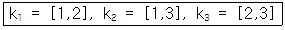
- q1q2 + q1q2 - q2q3
- q1q2 + q1q3 - q2q3
- q1q2 + q1q3 + q2q3 - q1q2q3
- q1q2 + q1q3 + q2q3 - 2q1q2q3
(정답률: 72%)
30. 다음 중 시스템이나 기기의 개발 설계단계에서 FMEA의 표준적인 실시 절차에 해당되지 않는 것은?
- 비용 효과 절충 분석
- 시스템 구성의 기본적 파악
- 상위 체계에의 고장 영향 분석
- 신뢰도 블록 다이어그램 작성
(정답률: 54%)
31. 다음 중 신체 동작의 유형에 관한 설명으로 틀린 것은?
- 내선(medial rotation) : 몸의 중심선으로의 회전
- 외전(abduction) : 몸의 중심선으로의 이동
- 굴곡(flexion) : 신체 부위 간의 각도의 감소
- 신전(extension) : 신체 부위 간의 각도의 증가
(정답률: 67%)
32. 다음 중 수공구 설계의 기본원리로 가장 적절하지 않은 것은?
- 손잡이의 단면이 원형을 이루어야 한다.
- 정밀작업을 요하는 손잡이의 직경은 2.5~4cm로 한다.
- 일반적으로 손잡이의 길이는 95%tile 남성의 손 폭을 기준으로 한다.
- 동력공구의 손잡이는 두 손가락 이상으로 작동하도록 한다.
(정답률: 56%)
33. 다음 중 신체의 열교환과정을 나타내는 공식으로 올바른 것은? (단, △S 는 신체열함량변화, M 은 대사열발생량, W 는 수행한 일, R 는 복사열교환량, C 는 대류열교환량, E 는 증발열발산량을 의미한다.)
- △S=(M-W)±R±C-E
- △S=(M+W)±R±C+E
- △S=(M-W)±R±C±E
- △S=(M-W)-R-C±E
(정답률: 55%)
34. 다음 중 설비의 고장과 같이 특정시간 또는 구간에 어떤 사건의 발생확률이 적은 경우 그 사건의 발생횟수를 측정하는데 가장 적합한 확률분포는?
- 와이블 분포(Weibull distribution)
- 푸아송 분포(Poisson distribution)
- 지수 분포(exponential distribution)
- 이항 분포(binomial distribution)
(정답률: 55%)
35. 불안전한 행동을 유발하는 요인 중 인간의 생리적 요인이 아닌 것은?
- 근력
- 반응시간
- 감지능력
- 주의력
(정답률: 31%)
36. 건습구도온도계에서 건구온도가 24℃이고, 습구온도가 20℃일 때 Oxford 지수는 얼마인가?
- 20.6℃
- 21.0℃
- 23.0℃
- 23.4℃
(정답률: 56%)
37. 산업안전보건법에 따라 유해・위험방지계획서에 관련서류를 첨부하여 해당 작업 시작 며칠 전까지 제출하여야 하는가?
- 7일
- 15일
- 30일
- 60일
(정답률: 63%)
38. 금속세정작업장에서 실시하는 안전성 평가단계를 다음과 같이 5가지로 구분할 때 다음 중 4단계에 해당 하는 것은?
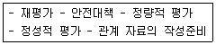
- 안전대책
- 정성적 평가
- 정량적 평가
- 재평가
(정답률: 68%)
39. 다음 중 특정한 목적을 위해 시각적 암호, 부호 및 기호를 의도적으로 사용할 때에 반드시 고려하여야 할 사항과 가장 거리가 먼 것은?
- 검출성
- 판별성
- 심각성
- 양립성
(정답률: 66%)
40. 경보사이렌으로부터 10m 떨어진 음압수준이 140dB이면 100m 떨어진 곳에서 음의 강도는 얼마인가?
- 100dB
- 110dB
- 120dB
- 140dB
(정답률: 50%)
3과목: 기계위험방지기술
41. 다음 중 산업안전보건법상 승강기의 종류에 해당 하지 않는 것은?
- 승용 승강기
- 리프트
- 에스컬레이터
- 화물용 승강기
(정답률: 66%)
42. 연삭기에서 숫돌의 바깥지름이 180mm일 경우 평형플랜지 지름은 몇 mm 이상이어야 하는가?
- 30
- 50
- 60
- 90
(정답률: 78%)
43. 다음 중 산업안전보건법상 아세틸렌 가스용접장치에 관한 기준으로 틀린 것은?
- 전용의 발생기실을 옥외에 설치한 경우에는 그 개구부를 다른 건축물로부터 1.5m 이상 떨어지도록 하여야 한다.
- 아세틸렌 용접장치를 사용하여 금속의 용접⋅용단 또는 가열작업을 하는 경우에는 게이지 압력이 127kPa을 초과하는 압력의 아세틸렌을 발생시켜 사용해서는 아니된다.
- 전용의 발생기실을 설치하는 경우 벽은 불연성 재료로 하고 철근 콘크리트 또는 그 밖에 이와 동등 하거나 그 이상의 강도를 가진 구조로 할 것
- 전용의 발생기실은 건물의 최상층에 위치하여야 하며, 화기를 사용하는 설비로부터 1m를 초과하는 장소에 설치하여야 한다.
(정답률: 74%)
44. 다음 중 밀링작업의 안전조치에 대한 사항으로 적절하지 않은 것은?
- 절삭중의 칩 제거는 칩 브레이크로 한다.
- 가공품을 측정할 때에는 기계를 정지시킨다.
- 일감을 풀어내거나 고정할 때에는 기계를 정지시킨다.
- 상하, 좌우의 이송 장치의 핸들은 사용 후 풀어놓는다.
(정답률: 69%)
45. 다음 중 산업용 로봇작업을 수행할 때의 안전조치사항과 가장 거리가 먼 것은?
- 자동운전 중에는 안전방책의 출입구에 안전플러그를 사용한 인터록이 작동하여야 한다.
- 액추에이터의 잔압 제거시에는 사전에 안전블록 등으로 강하방지를 한 후 잔압을 제거한다.
- 로봇의 교시작업을 수행할 때에는 매니퓰레이터의 속도를 빠르게 한다.
- 작업개시 전에 외부전선의 피복손상, 비상정지장치를 반드시 검사한다.
(정답률: 77%)
46. 다음 중 안전계수를 나타내는 식으로 옳은 것은?
- 허용응력/기초강도
- 최대설계응력/극한강도
- 안전하중/파단하중
- 파괴하중/최대사용하중
(정답률: 56%)
47. [그림]과 같은 프레스의 punch와 금형의 die에서 손가락이 punch와 die 사이에 들어가지 않도록 할 때 D의 거리로 가장 적절한 것은?
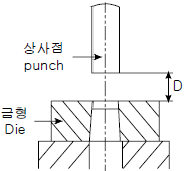
- 8mm 이하
- 10mm 이상
- 15mm 이하
- 15mm 초과
(정답률: 66%)
48. 다음 중 설비의 진단방법에 있어 비파괴 시험이나 검사에 해당하지 않는 것은?
- 피로시험
- 음향탐상검사
- 방사선투과시험
- 초음파탐상검사
(정답률: 80%)
49. 다음 중 진동 방지용 재료로 사용되는 공기스프링의 특징으로 틀린 것은?
- 공기량에 따라 스프링 상수의 조절이 가능하다.
- 측면에 대한 강성이 강하다.
- 공기의 압축성에 의해 감쇠 특성이 크므로 미소 진동의 흡수도 가능하다.
- 공기탱크 및 압축기 등의 설치로 구조가 복잡하고, 제작비가 비싸다.
(정답률: 55%)
50. 프레스 작업 중 부주의로 프레스의 페달을 밟는 것에 대비하여 페달에 설치하는 것은?
- 클램프
- 로크너트
- 커버
- 스프링 와셔
(정답률: 73%)
51. 산업안전보건법에 따라 사업주는 근로자가 안전하게 통행할 수 있도록 통로에 얼마 이상의 채광 또는 조명시설을 하여야 하는가?
- 50럭스
- 75럭스
- 90럭스
- 100럭스
(정답률: 75%)
52. 다음 중 소성가공을 열간가공과 냉간가공으로 분류하는 가공온도의 기준은?
- 융해점 온도
- 공석점 온도
- 공정점 온도
- 재결정 온도
(정답률: 66%)
53. 광전자식 방호장치의 광선에 신체의 일부가 감지된 후로부터 급정지기구가 작동개시 하기까지의 시간이 40ms이고, 광축의 설치거리가 96mm일 때 급정지기구가 작동개시한 때로부터 프레스기의 슬라이드가 정지될 때까지의 시간은?
- 15ms
- 20ms
- 25ms
- 30ms
(정답률: 54%)
54. 기능의 안전화 방안 중 근원적 안전대책에 해당하는 것은?
- 기계의 이상을 확인하고 급정지시켰다.
- 원활한 작동을 위해 급유를 하였다.
- 회로를 개선하여 오동작을 방지하도록 하였다.
- 기계의 볼트 및 너트가 이완되지 않도록 다시 조립하였다.
(정답률: 69%)
55. 다음 중 포터블 벨트 컨베이어(potable belt conveyor) 운전시 준수사항으로 적절하지 않은 것은?
- 공회전하여 기계의 운전상태를 파악한다.
- 정해진 조작 스위치를 사용하여야 한다.
- 운전시작 전 주변 근로자에게 경고하여야 한다.
- 하물 적치 후 몇 번씩 시동, 정지를 반복 테스트한다.
(정답률: 76%)
56. 다음 중 산업안전보건법상 지게차의 헤드가드에 관한 설명으로 틀린 것은?(관련 규정 개정전 문제로 여기서는 기존 정답인 1번을 누르면 정답 처리됩니다. 자세한 내용은 해설을 참고하세요.)
- 강도의 지게차의 최대하중의 1.5배 값의 등분포정하중(等分布靜河重)에 견딜 수 있을 것
- 상부틀의 각 개구의 폭 또는 길이가 16cm 미만일 것
- 운전자가 앉아서 조작하는 방식의 지게차의 경우에는 운전자의 좌석 윗면에서 헤드가드의 상부틀 아랫면까지의 높이가 1m 이상일 것
- 운전자가 서서 조작하는 방식의 지게차의 경우에는 운전석의 바닥면에서 헤드가드의 상부틀 하면까지의 높이가 2m 이상일 것
(정답률: 72%)
57. 롤러기의 앞면 롤의 지름이 300mm, 분당회전수가 30회일 경우 허용되는 급정지장치의 급정지거리는 약 얼마인가?
- 9.42mm
- 28.27mm
- 100mm
- 314.16mm
(정답률: 45%)
58. 용해아세틸렌의 가스집합용접장치의 배관 및 부속기구는 구리나 구리 함유량이 얼마 이상인 합금을 사용해서는 아니 되는가?
- 60%
- 65%
- 70%
- 75%
(정답률: 66%)
59. 산업안전보건법상 보일러의 안전한 가동을 위하여 보일러규격에 맞는 압력방출장치가 2개 이상 설치된 경우에 최고사용압력 이하에서 1개가 작동되고, 다른 압력방출장치는 최고사용압력의 몇 배 이하에서 작동되도록 부착하여야 하는가?
- 1.03배
- 1.⑤배
- 1.2배
- 1.5배
(정답률: 75%)
60. 회전축, 커플링에 사용하는 덮개는 다음 중 어떠한 위험점을 방호하기 위한 것인가?
- 회전말림점
- 접선물림점
- 절단점
- 협착점
(정답률: 69%)
4과목: 전기위험방지기술
61. 정전작업시 정전시킨 전로에 잔류전하를 방전할 필요가있다. 전원차단 이후에도 잔류전하가 남아 있을 가능성이 낮은 것은?
- 전력 케이블
- 용량이 큰 부하기기
- 전력용 콘덴서
- 방전 코일
(정답률: 70%)
62. 다음 중 활선근접 작업시의 안전조치로 적절하지 않은 것은?
- 저압 활선작업시 노출 충전부분의 방호가 어려운 경우에는 작업자에게 절연용 보호구를 착용토록 한다.
- 고압 활선작업시는 작업자에게 절연용 보호구를 착용 시킨다.
- 고압선로의 근접작업시 머리위로 30cm, 몸 옆과 발밑으로 50cm 이상 접근한계거리를 반드시 유지하여야 한다.
- 특고압 전로에 근접하여 작업시 감전위험이 없도록 대지와 절연조치가 된 활선작업용 장치를 사용하여야 한다.
(정답률: 70%)
63. 폭발성 가스의 발화온도가 450℃를 초과하는 가스의 발화도 등급은?
- G1
- G2
- G3
- G4
(정답률: 62%)
64. 200[A]의 전류가 흐르는 단상 전로의 한 선에서 누전되는 최소 전류는 몇 [A]인가?
- 0.1[A]
- 0.2[A]
- 1[A]
- 2[A]
(정답률: 58%)
65. 정전작업 안전을 확보하기 위하여 접지용구의 설치 및 철거에 대한 설명 중 잘못된 것은?
- 접지용구 설치전에 개폐기의 개방확인 및 검전기 등으로 충전 여부를 확인한다.
- 접지설치 요령은 먼저 접지측 금구에 접지선을 접속하고 금구를 기기나 전선에 확실히 부착한다.
- 접지용구 취급은 작업책임자의 책임하에 행하여야 한다.
- 접지용구의 철거는 설치순서와 동일하게 한다.
(정답률: 74%)
66. 저압 충전부에 인체가 접촉할 때 전격으로 인한 재해사고 중 1차적인 인자로 볼 수 없는 것은?
- 통전전류
- 통전경로
- 인가전압
- 통전시간
(정답률: 66%)
67. 감전 사고시 전선이나 개폐기 터미널 등의 금속분자가 고열로 용융됨으로서 피부 속으로 녹아 들어가는 것은?
- 피부의 광성변화
- 전문
- 표피박탈
- 전류반점
(정답률: 67%)
68. 정전기의 소멸과 완화시간의 설명 중 옳지 않는 것은?
- 정전기가 축적되었다가 소멸되는데 처음값의 63.8%로 감소되는 시간을 완화시간이라 한다.
- 완화시간은 대전체 저항 × 정전용량 = 고유저항 ×유전율로 정해진다.
- 고유저항 또는 유전율이 큰 물질일수록 대전상태가 오래 지속된다.
- 일반적으로 완화시간은 영전위 소요시간의 1/4~1/5 정도 이다.
(정답률: 42%)
69. 정전기의 유동대전에 가장 크게 영향을 미치는 요인은?
- 액체의 밀도
- 액체의 유동속도
- 액체의 접촉면적
- 액체의 분출온도
(정답률: 70%)
70. 어떤 부도체에서 정전용량이 10[pF]이고, 전압이 5000[V]일 때 전하량은?
- 2×10-14[C]
- 2×10-8[C]
- 5×10-8[C]
- 5×10-2[C]
(정답률: 52%)
71. 내측원통의 반경이 r 이고 외측원통의 반경이 R인 원통간극(r/R 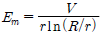
- 내측원통 표면에 코로나방전이 발생하기 시작한다.
- 최대전계가 감소한다.
- 외측원통의 반경이 증대되는 효과를 가져온다.
- 안정된 코로나 방전이 존재할 수 있다.
(정답률: 51%)
72. 폭발성 가스가 있는 위험장소에서 사용할 수 있는 전기설비의 방폭구조로서 내부에서 폭발하더라도 틈의 냉각효과로 인하여 외부의 폭발성 가스에 착화될 우려가 없는 방폭 구조는?
- 내압 방폭구조
- 유입 방폭구조
- 안전증 방폭구조
- 본질안전 방폭구조
(정답률: 70%)
73. 교류아크 용접기의 자동전격방지 장치는 무부하시의 2차측 전압을 저전압으로 1.5초안에 낮추어 작업자의 감전 위험을 방지하는 자동 전기적 방호장치이다. 피용접재에 접속되는 접지공사와 자동전격방지장치의 주요 구성품은?(관련 규정 개정전 문제로 여기서는 기존 정답인 4번을 누르면 정답 처리됩니다. 자세한 내용은 해설을 참고하세요.)
- 1종 접지공사와 변류기, 절연변압기, 제어장치, 전압계
- 2종 접지공사와 절연변압기, 제어장치, 변류기, 전류계
- 3종 접지공사와 보조변압기, 주회로변압기, 전압계
- 3종 접지공사와 보조변압기, 주회로변압기, 제어장치
(정답률: 57%)
74. 인체의 전기저항을 최악의 상태라고 가정하여 500[Ω]으로 하는 경우 심실세동을 일으킬 수 있는 에너지는 얼마정도인가? (단, 심실세동전류
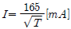
로 한다.)- 6.5~17.0[J]
- 2.5~3.0[J]
- 650~1700[mJ]
- 250~300[mJ]
(정답률: 68%)
75. 정전기 방지대책 중 틀린 것은?
- 대전서열이 가급적 먼 것으로 구성한다.
- 카본 블랙을 도포하여 도전성을 부여한다.
- 유속을 저감 시킨다.
- 도전성 재료를 도포하여 대전을 감소시킨다.
(정답률: 56%)
76. 가공 송전 선로에서 낙뢰의 직격을 받았을 때 발생하는 낙뢰전압이나 개폐서지 등과 같은 이상 고전압은 일반적으로 충격파라 부르는데 이러한 충격파는 어떻게 표시하는가?
- 파두시간 × 파미부분에서 파고치의 63%로 감소할 때 까지의 시간
- 파두시간 × 파미부분에서 파고치의 50%로 감소할 때 까지의 시간
- 파두시간 × 파미부분에서 파고치의 37%로 감소할 때 까지의 시간
- 파두시간 × 파미부분에서 파고치의 10%로 감소할 때 까지의 시간
(정답률: 60%)
77. 제전기의 종류가 아닌 것은?
- 전압인가식 제전기
- 정전식 제전기
- 이온식 제전기
- 자기방전식 제전기
(정답률: 44%)
78. 반도체 취급시에 정전기로 인한 재해 방지대책으로 거리가 먼 것은?
- 송풍형 제전기 설치
- 부도체의 접지 실시
- 작업자의 대전방지 작업복 착용
- 작업대에 정전기 매트 사용
(정답률: 60%)
79. 정전 작업시 작업전 조치사항 중 가장 거리가 먼 것은?
- 검전기로 충전 여부를 확인한다.
- 단락 접지 상태를 수시로 확인한다.
- 전력케이블의 잔류전하를 방전한다.
- 전로의 개로 개폐기에 잠금장치 및 통전금지 표지판을 설치한다.
(정답률: 65%)
80. 최소 감지전류를 설명한 것이다. 옳은 것은? (단, 건강한 성인 남녀인 경우이며, 교류 60[Hz] 정현파이다.)
- 남녀 모두 직류 5.2[mA]이며, 교류(평균치) 1.1[mA] 이다.
- 남자의 경우 직류 5.2[mA]이며, 교류(실효치) 1.1[mA] 이다.
- 남녀 모두 직류 3.5[mA]이며, 교류(실효치) 1.1[mA] 이다.
- 여자의 경우 직류 3.5[mA]이며, 교류(평균치) 0.7[mA] 이다.
(정답률: 60%)
5과목: 화학설비위험방지기술
81. 자동화재 탐지설비 중 열감지식 감지기가 아닌 것은?
- 차동식 감지기
- 정온식 감지기
- 보상식 감지기
- 광전식 감지기
(정답률: 75%)
82. 다음 중 외부에서 화염, 전기불꽃 등의 착화원을 주지 않고 물질을 공기 중 또는 산소 중에서 가열할 경우에 착화 또는 폭발을 일으키는 최저온도는 무엇인가?
- 인화온도
- 연소점
- 비등점
- 발화온도
(정답률: 54%)
83. 다음 중 긴급차단장치의 차단방식과 관계가 가장 적은 것은?
- 공기압식
- 유압식
- 전기식
- 보온식
(정답률: 61%)
84. 압축기의 종류를 구조에 의해 용적형과 회전형으로 분류 할 때 다음 중 회전형으로만 올바르게 나열한 것은?
- 원심식압축기, 축류식압축기
- 축류식압축기, 왕복식압축기
- 원심식압축기, 왕복식압축기
- 왕복식압축기, 단계식압축기
(정답률: 62%)
85. 비교적 저압 또는 상압에서 가연성의 증기를 발생하는 유류를 저장하는 탱크에서 외부에 그 증기를 방출하기도 하고, 탱크 내에 외기를 흡입하기도 하는 부분에 설치하며, 가는 눈금의 금망이 여러 개 겹쳐진 구조로 된 안전장치는?
- check valve
- flame arrester
- ventstack
- rupture disk
(정답률: 65%)
86. 다음중 소화설비와 주된 소화적용방법의 연결이 옳은 것은?
- 포소화설비 - 질식소화
- 스프링클러설비 - 억제소화
- 이산화탄소소화설비 - 제거소화
- 할로겐화합물소화설비 - 냉각소화
(정답률: 65%)
87. 폭발한계와 완전연소조성 관계인 Jones 식을 이용한 부탄(C4H10)의 폭발하한계는 약 얼마인가? (단, 공기 중 산소의 농도는 21%로 가정한다.)
- 1.4%v/v
- 1.7%v/v
- 2.0%v/v
- 2.3%v/v
(정답률: 50%)
88. 다음 중 가연성 기체의 폭발한계와 폭굉한계를 가장 올바르게 설명한 것은?
- 폭발한계와 폭굉한계는 농도범위가 같다.
- 폭굉한계는 폭발한계의 최상한치에 존재한다.
- 폭발한계는 폭굉한계보다 농도범위가 넓다.
- 두 한계의 하한계는 같으나, 상한계는 폭굉한계가 더 높다.
(정답률: 48%)
89. 다음 중 허용노출기준(TWA)이 가장 낮은 물질은?
- 불소
- 암모니아
- 니트로벤젠
- 황화수소
(정답률: 60%)
90. 5% NaOH 수용액과 10% NaOH 수용액을 반응기에 혼합하여 6% 100kg의 NaOH 수용액을 만들려면 각각 몇 kg의 NaOH 수용액이 필요한가?
- 5% NaOH 수용액: 33.3, 10% NaOH 수용액: 66.7
- 5% NaOH 수용액: 50, 10% NaOH 수용액: 50
- 5% NaOH 수용액: 66.7, 10% NaOH 수용액: 33.3
- 5% NaOH 수용액: 80, 10% NaOH 수용액: 20
(정답률: 47%)
91. 다음 중 산업안전보건법상 건조설비의 구조에 관한 설명으로 틀린 것은?
- 건조설비의 바깥 면은 불연성 재료로 만들 것
- 건조설비의 내부는 청소하기 쉬운 구조로 할 것
- 건조설비는 내부의 온도가 국부적으로 상승하지 아니하는 구조로 설치할 것
- 위험물 건조설비의 열원으로서 직화를 사용할 것
(정답률: 73%)
92. 다음 중 아세틸렌을 용해가스로 만들 때 사용되는 용제로 가장 적합한 것은?
- 아세톤
- 메탄
- 부탄
- 프로판
(정답률: 74%)
93. 다음 중 에틸알콜(C2H5OH)이 완전연소시는 CO2와 H2O 의 몰수로 알맞은 것은?
- CO2=1, H2O=4
- CO2=2, H2O=3
- CO2=3, H2O=2
- CO2=4, H2O=1
(정답률: 66%)
94. 다음 중 혼합 또는 접촉시 발화 또는 폭발의 위험이 가장 적은 것은?
- 니트로셀룰로오스와 알코올
- 나트륨과 알코올
- 염소산칼륨과 유황
- 황화인과 무기과산화물
(정답률: 53%)
95. 다음 중 자기반응성물질에 의한 화재에 대하여 사용할 수 없는 소화기의 종류는?
- 무상강화액소화기
- 이산화탄소소화기
- 포소화기
- 봉상수(棒狀水)소화기
(정답률: 44%)
96. 다음 중 분진폭발의 특징을 가장 올바르게 설명한 것은?
- 가스폭발보다 발생에너지가 작다.
- 폭발압력과 연소속도는 가스폭발보다 크다.
- 불완전연소로 인한 가스중독의 위험성이 적다.
- 화염의 파급속도보다 압력의 파급속도가 크다.
(정답률: 68%)
97. 다음 중 산업안전보건법상 공정안전보고서에 포함되어야 할 사항과 가장 거리가 먼 것은?
- 공정안전자료
- 비상조치계획
- 평균안전율
- 공정위험성 평가서
(정답률: 60%)
98. 안전설계의 기초에 있어 기상폭발대책을 예방대책, 긴급대책, 방호대책으로 나눌 때 다음 중 방호대책과 가장 관계가 깊은 것은?
- 경보
- 발화의 저지
- 방폭벽과 안전거리
- 가연조건의 성립저지
(정답률: 66%)
99. 다음 중 물과의 접촉을 금지하여야 하는 물질이 아닌 것은?
- 칼륨(K)
- 리튬(Li)
- 황린(P4)
- 칼슘(Ca)
(정답률: 57%)
100. 산업안전보건법에 따라 인화성 가스가 발생할 우려가 있는 지하작업장에서 작업하는 경우 조치사항으로 적절하지 않은 것은?
- 매일 작업을 시작하기 전 해당 가스의 농도를 측정한다.
- 가스의 누출이 의심되는 경우 해당 가스의 농도를 측정한다.
- 장시간 작업을 계속하는 경우 6시간마다 해당 가스의 농도를 측정한다.
- 가스의 농도가 인화하한계 값의 25% 이상으로 밝혀진 경우에는 즉시 근로자를 안전한 장소에 대피시킨다.
(정답률: 72%)
6과목: 건설안전기술
101. 지름이 15cm이고 높이가 30cm인 원기둥 콘크리트 공시체에 대해 압축강도시험을 한 결과 460kN에 파괴되었다. 이 때 콘크리트 압축강도는?
- 16.2MPa
- 21.5MPa
- 26MPa
- 31.2MPa
(정답률: 44%)
102. 악천후 및 강풍 시 타워크레인의 운전작업을 중지해야 할 순간풍속기준으로 옳은 것은?(관련 규정 개정전 문제로 기존정답은 3번입니다. 여기서는 3번을 누르면 정답처리 됩니다. 자세한 내용은 해설을 참고하세요.)
- 초당 10m 를 초과
- 초당 15m 를 초과
- 초당 20m 를 초과
- 초당 30m 를 초과
(정답률: 64%)
103. 강관을 사용하여 비계를 구성하는 경우 준수하여야 하는 사항으로 옳지 않은 것은?(관련 규정 개정전 문제로 여기서는 기존 정답인 2번을 누르면 정답 처리됩니다. 자세한 내용은 해설을 참고하세요.)
- 비계기둥의 간격은 띠장 방향에서는 1.5m 이상 1.8m 이하로 할 것
- 비계기둥 간의 적재하중은 300kg을 초과하지 않도록 할 것
- 비계기둥의 제일 윗부분으로부터 31m 되는 지점 밑부분의 비계기둥은 2개의 강관으로 묶어 세울 것
- 띠장간격은 1.5m 이하로 설치하되, 첫 번째 띠장은 지상으로부터 2m 이하의 위치에 설치할 것
(정답률: 73%)
104. 다음 중 추락재해를 방지하기 위한 고소작업 감소대책으로 옳은 것은?
- 방망 설치
- 철골기둥과 빔을 일체 구조화
- 안전대 사용
- 비계 등에 의한 작업대 설치
(정답률: 53%)
1⑤. 다음 중 토사붕괴의 내적원인인 것은?
- 토석의 강도저하
- 사면법면의 기울기 증가
- 절토 및 성토 높이 증가
- 공사에 의한 진동 및 반복 하중 증가
(정답률: 69%)
106. 토질시험 중 사질토 시험에서 얻을 수 있는 값이 아닌 것은?
- 체적압축계수
- 내부마찰각
- 액상화 평가
- 탄성계수
(정답률: 25%)
107. 철골공사시 사전안전성 확보를 위해 공작도에 반영하여야 할 사항이 아닌 것은?
- 주변 고압전주
- 외부비계받이
- 기둥승강용 트랩
- 방망 설치용 부재
(정답률: 40%)
108. 굴착기계의 운행 시 안전대책으로 옳지 않은 것은?
- 버킷에 사람의 탑승을 허용해서는 안된다.
- 운전반경 내에 사람이 있을 때 회전은 10rpm 이하의 느린 속도로 하여야 한다.
- 장비의 주차 시 경사지나 굴착작업장으로부터 충분히 이격시켜 주차한다.
- 전선밑에서는 주의하여 작업하여야 하며, 전선과 안전장치의 안전간격을 유지하여야 한다.
(정답률: 75%)
109. 물체가 떨어지거나 날아올 위험을 방지하기 위한 낙하물 방지망 또는 방호선반을 설치할 때 수평면과의 적정한 각도는?
- 10° ~ 20°
- 20° ~ 30°
- 30° ~ 40°
- 40° ~ 45°
(정답률: 67%)
110. 항만하역 작업시 근로자 승강용 현문사다리 및 안전망을 설치하여야 하는 선박은 최소 몇 톤 이상일 경우인가?
- 500톤
- 300톤
- 200톤
- 100톤
(정답률: 64%)
111. 다음 중 그물코의 크기가 5cm인 매듭방망의 폐기기준 인장강도는?
- 200 kg
- 100 kg
- 60 kg
- 30 kg
(정답률: 59%)
112. 크레인을 사용하여 작업을 하는 경우 준수하여야 하는 사항으로 옳지 않은 것은?
- 인양할 하물을 바닥에서 끌어당기거나 밀어내는 작업을 할 것
- 고정된 물체를 직접분리 ㆍ 제거하는 작업을 하지 아니 할 것
- 미리 근로자의 출입을 통제하여 인양 중인 하물이 작업자의 머리 위로 통과하지 않도록 할 것
- 인양할 하물이 보이지 아니하는 경우에는 어떠한 동작도 하지 아니할 것
(정답률: 68%)
113. 다음 중 흙막이 지보공을 조립하는 경우 작성하는 조립도에 명시되어야 하는 사항과 가장 거리가 먼 것은?
- 부재의 치수
- 버팀대의 긴압의 정도
- 부재의 재질
- 설치방법과 순서
(정답률: 49%)
114. 이동식 비계를 조립하여 작업을 하는 경우에 작업발판의 최대적재하중은 몇 kg을 초과하지 않도록 해야 하는가?
- 150kg
- 200kg
- 250kg
- 300kg
(정답률: 60%)
115. 비계의 높이가 2m 이상인 작업장소에 작업발판을 설치할 경우 준수하여야 할 기준으로 옳지 않은 것은?
- 발판의 폭은 30cm 이상으로 할 것
- 발판재료간의 틈은 3cm 이하로 할 것
- 추락의 위험이 있는 장소에는 안전난간을 설치할 것
- 발판재료는 뒤집히거나 떨어지지 아니하도록 2 이상의 지지물에 연결하거나 고정시킬 것
(정답률: 67%)
116. 차량계 건설기계를 사용하여 작업을 하는 때에 작업계획에 포함되지 않아도 되는 사항은?
- 사용하는 차량계 건설기계의 종류 및 성능
- 차량계 건설기계의 운행경로
- 차량계 건설기계에 의한 작업방법
- 차량계 건설기계 사용 시 유도자 배치 위치
(정답률: 56%)
117. 건설용 시공기계에 관한 기술 중 옳지 않은 것은?
- 타워크레인(tower crane)은 고층건물의 건설용으로 많이 쓰인다.
- 백호우(back hoe)는 기계가 위치한 지면보다 높은 곳의 땅을 파는데 적합하다.
- 가이데릭(guy derrick)은 철골세우기 공사에 사용된다.
- 진동 롤러(vibrating roller)는 아스팔트콘크리트 등의 다지기에 효과적으로 사용된다.
(정답률: 72%)
118. 다음 중 터널공사의 전기발파작업에 대한 설명 중 옳지 않은 것은?
- 점화는 충분한 허용량을 갖는 발파기를 사용한다.
- 발파 후 즉시 발파모선을 발파기로부터 분리하고 그 단부를 절연시킨다.
- 전선의 도통시험은 화약장전 장소로부터 최소 30m 이상 떨어진 장소에서 행한다.
- 발파모선은 고무 등으로 절연된 전선 20m 이상의 것을 사용한다.
(정답률: 48%)
119. 선창의 내부에서 화물취급작업을 하는 근로자가 안전하게 통행할 수 있는 설비를 설치하여야 하는 기준은 갑판의 윗면에서 선창 밑바닥까지의 깊이가 최소얼마를 초과할 때인가?
- 1.3m
- 1.5m
- 1.8m
- 2.0m
(정답률: 50%)
120. 작업장으로 통하는 장소 또는 작업장 내에 근로자가 사용할 통로설치에 대한 준수사항 중 다음 ( )안에 알맞은 숫자는?
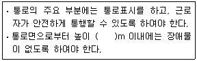
- 2
- 3
- 4
- 5
(정답률: 63%)